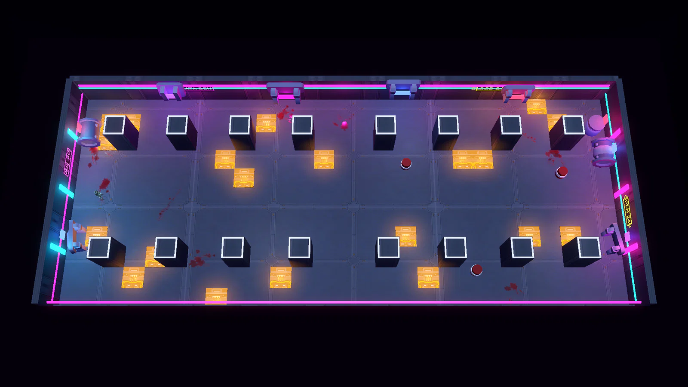

Edgerunners 기획서
레벨 기획서
맵 제작 과정, 맵 목록, 첫 판의 등장 순서, 보스.

레벨 기획서
EDGE
RUNNERS
사이버펑크 2077을 탑다운 로그라이트로 재구성한 게임.
이 문서는 맵 구조, 방 종류, 등장 순서, 보스를 다룬다.
장대규
1인 개발, Godot 4.7.2, 2026.08.21 – 10.21
01 레벨 제작 과정
레벨은 손그림, 격자 도면, 실제 플레이 순서로 만든다

손그림
엄폐물과 전기 함정, 보상 위치를 색으로 칠한다.
그림 아래에 의도한 플레이를 적는다.

격자 도면
맵 편집기에서 한 칸 2m 격자로 옮긴다.
20×15칸이 그대로 40×30m 방이 된다.

실제 플레이
편집기에서 Enter를 누르면 그 자리에서 방을 다시 생성해 바로 전투를 시험한다.
EDGERUNNERS 레벨 기획서
02
04 맵 목록 · 전투방
전투방은 도면 후보 중 하나를 뽑아 만든다
바람개비 · 40×30m
높은 엄폐물 네 개를 가운데 기준으로 바람개비처럼 엇갈리게 놓았다.
방을 돌면서 싸울지, 가운데 전기 함정을 지나 질러갈지 고민하게 만든다.
고리 · 40×30m
가운데에 낮은 엄폐물을 I자로 놓고, 외벽을 따라 전기 함정을 둘렀다.
I자를 끼고 돌며 적을 따돌릴 수 있다.

가로형 · 54×22m
가로로 긴 방이다.
[기획 의도 한 줄]
기본 방
고정 엄폐물 7개를 둔 기준 방도 전투방과 엘리트방 후보에 함께 들어간다.
EDGERUNNERS 레벨 기획서
05
06 첫 런의 등장 순서
새 장치는 방 번호에 따라 하나씩 등장한다
1
엄폐물
벽
2
폭발물
3
속성 적
메딕
4
드론
5
엘리트
6
??? 방
7
8
전기 함정
9
10
11
12

1 엄폐물
총알을 막아 주는 곳과 시야가 가려지는 곳이 있다.

2 폭발물
지형지물을 무기로 쓴다.

5 엘리트
공격 예고를 보고 피한다.

8 전기 함정
전기 함정 위에는 오래 머무를 수 없다.
장치를 처음 만나면 실제 모델을 3D로 띄운 설명창이 한 번 뜬다.
이 순서는 첫 런에만 적용하고, 보스를 한 번 처치하면 처음부터 모든 장치가 나온다.
EDGERUNNERS 레벨 기획서
07
07 웨이브
모든 방은 최소 두 웨이브로 진행된다

한 웨이브의 적이 사방에서 다가온다.
적마다 공격 예고가 따로 표시된다.
2
모든 방의 최소 웨이브
3
엘리트방과 ??? 방의 웨이브
7~9
웨이브당 적 수
×1.8
넓은 방의 최대 배율
웨이브를 나눈 이유
웨이브가 바뀔 때마다 위치를 다시 잡아야 한다.
그래서 첫 방부터 엄폐물과 대시를 쓸 일이 생긴다.
EDGERUNNERS 레벨 기획서
08
09 보스
보스는 체간을 무너뜨려야 큰 피해를 줄 수 있다

2페이즈의 보스가 붉은 잔상을 남기며 다가와 칼을 들었다.
주황은 공격 범위, 빨강은 판정 시점이다.
체력 2000
평소 받는 피해 -70%
1페이즈
2페이즈 (50%부터)
체간 900
체간이 차면
5초 무너짐
F로 처형
처형 피해는 최대 체력의 5.5% × 플레이어의 피해 배율이다.
2페이즈
이동 속도 ×1.12, 피해 ×1.3, 공격 예고 시간 ×0.7이 적용된다.
산데비스탄 돌진, 어둠 기습, 전기 장판 같은 패턴이 추가된다.
잡기
1페이즈는 리볼버 3발과 돌려차기로, 2페이즈는 8연타와 공중 발차기로 이어진다.
EDGERUNNERS 레벨 기획서
10